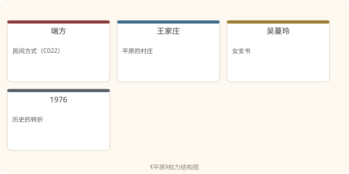

平原
一、基本信息
| 作者 | 毕飞宇 |
|---|---|
| 成书/出版 | 出版年份待核（中国作家网 C022：作品列表'长篇《上海往事》《平原》《推拿》《玉米》'——2005年说通说待核） 汪政：毕飞宇的目光（中国作家网）（官方文学机构） |
| 国别/地区 | 中国 |
| 时代 | 现当代 · 当代 |
| 体裁 | 长篇小说 |
| 语言 | 汉语（白话） |

《平原》权力结构图（主题·结构图）
二、创作背景
中国作家网（C022）：作品列表'长篇《上海往事》《平原》《推拿》《玉米》'。
评述（C022）：'《平原》的主人公端方在王家庄地位的确立靠的就是近似流氓无产者的民间方式'（C022）。
三、内容脉络
端方在王家庄的崛起与坠落：1976年前后（C022 评述语境+通说待核）。
四、主要人物表
| 人物 | 身份 | 说明 |
|---|---|---|
| 端方 | 回乡知青 | 民间方式确立地位（C022） |
| 吴蔓玲 | 村支书 | （通说待核） |
五、主题与艺术特点
- 权力与身体的民间方式（C022）。
- 1976年转折的乡土面（通说）。
- 王家庄：与'玉米系列'同域（通说待核）。
六、影响与评论
- 中国作家网：端方评述（C022）。
汪政：毕飞宇的目光（中国作家网）（官方文学机构） - 中国作家网：毕飞宇作品谱系（C022）。
汪政：毕飞宇的目光（中国作家网）（官方文学机构）
七、阅读建议
难点
- 1976年代背景。
- 民间暴力描写。
- 《平原》（上海文艺出版社，通说待核）。
《玉米》系列后读。
八、待核实
- 2005年出版（上海文艺说）核对。
- 端方/吴蔓玲人名核对。
- 与《玉米》系列的地理关系待核。
本页主要来源
毕飞宇的其他收录作品：推拿